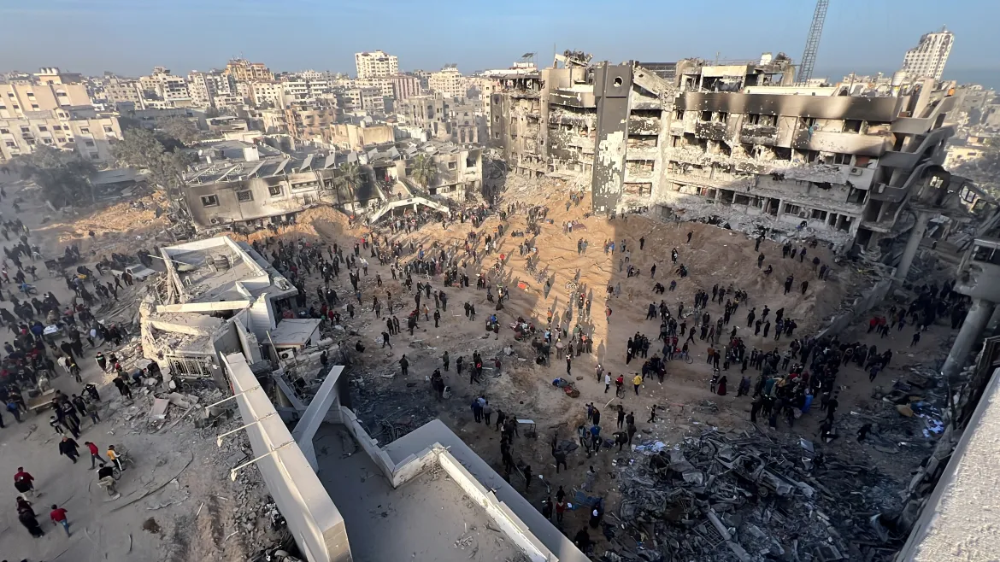

El ejército israelí ha dañado o destruido aproximadamente el 62 por ciento de todos los hogares en Gaza
(290.820 unidades de vivienda), dejando a más de un millón de personas sin hogar.
desde el inicio de su último asalto a la Franja de Gaza tras el ataque sorpresa de Hamás el 7 de octubre.
Los 18.500 millones de dólares en daños estimados por el Banco Mundial y la ONU
también se han producido en la infraestructura de servicios públicos,
con 26 millones de toneladas de escombros dejados por la destrucción.
Más de 45.000 misiles y bombas han sido lanzados en Gaza,
esa cantidad representa “más de 65.000 toneladas de explosivos, que es más que el peso
y la potencia de tres bombas nucleares como las que fueron lanzadas sobre la ciudad japonesa de Hiroshima”
en la Segunda Guerra Mundial, según un comunicado del Gobierno gazatí.
Mohammad Ziyara, ministro palestino de Obras Públicas y Vivienda, afirmó que el bombardeo
"borró a familias enteras del registro civil", así como "barrios y comunidades residenciales".
"También destruyó instalaciones, incluidos hospitales, lugares de culto, panaderías,
estaciones de servicio de agua, mercados, escuelas e instituciones educativas y de servicios",
añadió Ziyara en un comunicado.
La Franja de Gaza, hogar de unos 2,3 millones de personas,
cubre una pequeña área de 365 kilómetros cuadrados (141 millas cuadradas).
ha sido descrita como una de las peores de la historia moderna.
Hogares destruidos
Según la oficina humanitaria de la ONU , al menos el 60 por ciento de todas las viviendas del enclave han resultado dañadas o destruidas en los ataques israelíes.Se estima que 1,4 millones de personas en Gaza han sido desplazadas internamente debido al incesante bombardeo, y unas 629.000 se han refugiado en 150 refugios de emergencia designados por la ONU.
Video en el Barrio de Bani Suhaila, Khan Younis.
«Ningún lugar es seguro en Gaza»
Desde que comenzó la guerra los residentes de Gaza han acudido en masa a hospitales y escuelas
porque sus hogares han sido destruidos y no tienen otro lugar adonde ir,
con la esperanza de que Israel respete el derecho internacional y no ataque esas coordenadas.
Sin embargo, los lugares de refugio tampoco han estado libres de ataques israelíes.
Israel ha atacado repetidamente escuelas e incluso centros de atención neonatal, lo que ha provocado la muerte de bebés recién nacidos.
Según datos de Save the Children de principios de noviembre, cada 10 minutos matan a un niño. La ONU ha calificado el enclave palestino asediado
como “un cementerio” de niños debido a las elevadas cifras de víctimas.
"Nuestros temores más graves acerca de que el número de niños asesinados se convirtiera en docenas,
luego cientos y finalmente miles se hicieron realidad en sólo quince días",
dijo James Elder,
portavoz del Fondo de las Naciones Unidas para la Infancia (UNICEF), el 31 de octubre.
La mayoría de los ocho campos de refugiados en la Franja de Gaza, donde viven más de 1,1 millones de refugiados registrados,
han sido atacados por aviones de combate israelíes, masacrando a familias enteras.
“Hacemos totalmente responsable a la ocupación israelí de esta atroz masacre y de las masacres en curso contra nuestro pueblo palestino.
También culpamos a la comunidad internacional, a la administración estadounidense y
personalmente al presidente Biden por la continuación de masacres
y crímenes que violan el derecho internacional y todos los tratados y convenciones internacionales”,
dijo la oficina de medios. [Abdelhakim Abu Riash/Al Jazeera]
Escuelas destruidas
Todas las escuelas de Gaza han sido cerradas y ninguna universidad ha sobrevividoa los más de 200 días de ataque del ejército israelí.
Cientos de escuelas, incluidas las administradas por la ONU, en el asediado enclave palestino han sido bombardeadas y estudiantes y maestros asesinados, han devastado la infraestructura educativa y causado traumas mentales a miles de estudiantes asediados.
El director de Save the Children para Palestina, Jason Lee, dijo en octubre:
“Los ataques a infraestructuras civiles, incluidas escuelas y hospitales donde los niños buscan refugio, son más que inadmisibles. Esta guerra está erosionando a la humanidad y se está saliendo de control”.
Al menos 133 escuelas se utilizan como refugio para palestinos desplazados internamente en la Franja de Gaza. Estas escuelas albergan a muchas más personas de las que tienen capacidad, ya que más de 1,9 millones de personas han sido desplazadas.
Israel ha atacado múltiples escuelas que servían de refugio, asesinando a palestinos desplazados. Video de la universidad Al Israa, el 18 de enero de 2024.
Israel ha advertido a 24 hospitales que sean evacuados, incluido el más grande, el Hospital al-Shifa en la ciudad de Gaza.
El ejército israelí ha centrado sus ataques en hospitales de toda Gaza a pesar de que están protegidos por el derecho internacional, alegando que Hamás está operando dentro y debajo de ellos.
Todos los hospitales han sufrido daños críticos y sólo 10 de 36 pueden funcionar parcialmente, pero están cada vez más sobrecargados.
"Todas las instalaciones restantes están funcionando al 150 por ciento de su capacidad", dijo al-Qudra.
“Como resultado, nos hemos visto obligados a realizar operaciones quirúrgicas en el suelo.
Nos hemos quedado totalmente sin combustible, suministros médicos y medicinas en todos los hospitales de Gaza.
Esperamos que el número de muertes aumente”.
Los médicos trabajan las 24 horas del día a pesar de la escasez de suministros médicos y el colapso casi total del sistema de salud en Gaza.
"Todos están decididos a no evacuar", dijo al-Dergan. “Ni siquiera es posible. ¿Cómo podemos trasladar a los pacientes en cuidados intensivos o sometidos a cirugía?
Si los israelíes quieren bombardear los hospitales, eso estará sobre nuestras cabezas mientras apoyamos a nuestros pacientes”
"Lo que estamos experimentando como médicos en los hospitales es un millón de veces más de lo que podemos soportar",
afirmó al-Degran. Hizo un llamado al mundo para que apoye a Gaza y “no la abandone”.
“Detengamos esta guerra en Gaza, donde familias enteras ya han sido borradas del registro civil. Esta muerte y destrucción es suficiente”. dijo al-Degran.
La OMS ha calificado las órdenes de evacuación de Israel como una “sentencia de muerte” para los enfermos y heridos.
¿Qué esta pasando en el Hospital Al-shifa?
El 18 de marzo las fuerzas militares de Israel irrumpieron en el hospital Al-Shifa en la ciudad de Gaza con tanques y intenso fuego,
lo que provocó muertos y heridos, dijeron funcionarios palestinos.
El Ministerio de Salud de Gaza dijo que unas 30.000 personas,
incluidos civiles desplazados, pacientes heridos y personal médico, estaban atrapadas dentro del complejo.
El periodista Mahmoud, citando a testigos, dijo que muchos palestinos fueron golpeados y abusados verbalmente, algunos con los ojos vendados y las manos atadas a la espalda.
Luego los metieron dentro de un camión militar israelí y los llevaron a un lugar desconocido, dijo.
El Ministerio de Salud de Gaza dijo que las fuerzas israelíes lanzaron misiles y abrieron fuego contra uno de los edificios del hospital, matando e hiriendo a palestinos, y una sección del patio del hospital fue arrasada con topadoras
Según Mahmoud, las fuerzas israelíes también habían arrestado a 80 palestinos más, entre ellos “mujeres del personal médico y [otros] periodistas”.
Marx señaló que esta es la quinta incursión israelí en Al Shifa desde el 7 de octubre. Un largo asedio a las instalaciones en noviembre le valió a Israel una protesta internacional.
El 15 de noviembre de 2023, 36 bebés prematuros fueron sacados de sus incubadoras porque la estación que les suministraba oxígeno fue destruida en los bombardeos israelíes,
Murieron tres bebés.
La Oficina de Medios del Gobierno en Gaza condenó la operación y calificó el ataque de “crimen de guerra”
El 1 de abril el ejército israelí se retiró del hospital más grande de la Franja de Gaza después de una incursión de dos semanas,
dejando tras de sí escenas de devastación.
Informaron haber encontrado cuerpos esparcidos dentro y fuera de las instalaciones.

Mohammed Mahdi, uno de los que regresaron, describió una escena de “destrucción total”.
Dijo que varios edificios habían sido incendiados y que había contado seis cadáveres en la zona, dos de ellos en el patio del hospital.
Otro residente, Yahia Abu Auf, dijo que las excavadoras del ejército habían arrasado
un cementerio improvisado dentro del recinto hospitalario, donde todavía había pacientes, trabajadores médicos y personas desplazadas refugiadas.
"La situación es indescriptible", afirmó. "La ocupación destruyó todo sentido de vida aquí.
Israel ha acusado a Hamás de utilizar hospitales con fines militares y ha allanado varias instalaciones médicas.
Los críticos acusan al ejército israelí de poner en peligro imprudentemente a la población civil y de diezmar un sector sanitario ya abrumado por los heridos de guerra.
«'Gritan de hambre' - Cómo Israel está matando de hambre a Gaza»
La situación humanitaria en Gaza ha empeorado significativamente en 2024 a medida
que el ejército israelí bloquea la llegada de ayuda y ha impuesto efectivamente el hambre como arma de guerra.
Casi los 2,3 millones de personas atrapadas en Gaza ahora se enfrentan a la hambruna,
y la ONU dice que la hambruna se extenderá a varias partes de Gaza en mayo.
El norte de Gaza, que fue el primero en ser diezmado por una invasión terrestre israelí, es el más afectado:
Israel continúa restringiendo severamente el acceso al norte,
bloqueando rutas y sometiendo los convoyes de ayuda
a retrasos o cancelaciones.
Bebés y niños pequeños han muerto por deshidratación y desnutrición en el norte de Gaza,
pero Israel sigue bloqueando muchas misiones humanitarias.
A principios de abril, las fuerzas israelíes mataron deliberadamente a siete trabajadores humanitarios extranjeros
en tres ataques selectivos consecutivos contra un convoy de automóviles en un tramo de 2,3 kilómetros (1,4 millas),
lo que llevó a algunas organizaciones humanitarias a suspender los servicios.
Gaza enfrenta un hambre catastrófica
Israel ha bloqueado repetidamente la entrega de suministros de ayuda, incluidos alimentos,
a pesar del fallo de la Corte Internacional de Justicia de enero que ordenó a Israel "garantizar la entrega de servicios básicos y ayuda humanitaria esencial a los civiles en Gaza".
Según un informe respaldado por las Naciones Unidas publicado la semana pasada,
la mitad de la población de Gaza (1,1 millones de personas) ha agotado por completo sus suministros de alimentos.
“La gente en Gaza está muriendo de hambre en este momento.
La velocidad a la que esta crisis de hambre y desnutrición provocada por el hombre ha arrasado Gaza es aterradora”,
dijo la directora ejecutiva del Programa Mundial de Alimentos, Cindy McCain.
y su capacidad de supervivencia y se enfrenta a un “hambre catastrófica”, el indicador más alto de una hambruna.
Niños muriendo de desnutrición
Uno de cada tres niños menores de dos años en el norte de Gaza sufre desnutrición aguda,
según los exámenes nutricionales realizados por UNICEF y sus socios.
"La velocidad a la que se ha desarrollado esta catastrófica crisis de desnutrición infantil en Gaza es impactante,
especialmente cuando la asistencia que se necesita desesperadamente está disponible a sólo unos kilómetros de distancia",
dijo Catherine Russell, directora ejecutiva de UNICEF.
"Realmente no sabemos qué les está sucediendo a otros niños a los que no tenemos acceso;
lo que sabemos y sobre lo que hemos estado advirtiendo es que el acceso a la ayuda humanitaria
y su entrega pueden realmente reducir la proporción de desnutrición entre niños”,
afirmó Adele Khodr, directora regional de UNICEF para Oriente Medio y el Norte de África.
En febrero, Save the Children advirtió que Gaza estaba presenciando “una matanza masiva de niños en cámara lenta porque no queda comida y nada les llega”.
No hay bebés de tamaño normal.
"Los médicos informan que ya no ven bebés de tamaño normal",
dijo a los periodistas el funcionario del UNFPA, Dominic Allen,
después de visitar hospitales que aún brindan servicios de maternidad
en el norte de Gaza, donde la necesidad es especialmente grande.
"Sin embargo, lo que sí ven, trágicamente, es más nacimientos muertos... y más muertes neonatales,
causadas en parte por la desnutrición, la deshidratación y las complicaciones", añadió Allen.
El número de partos complicados es aproximadamente el doble de lo que era antes de que comenzara la guerra con Israel:
madres estresadas, temerosas, desnutridas y agotadas, y los cuidadores a menudo carecen de los suministros necesarios.
"La gente está desesperada por comida... se puede entender lo difícil que es para una madre o un padre ver a sus hijos morir de hambre y no poder mantenerlos...
es por eso que las agencias de la ONU están presionando para lograr un mayor acceso al norte",
Noor Hammad. , dijo a Al Jazeera un asistente de comunicaciones del PMA que supervisa las entregas de alimentos.
"Las necesidades son extremas y es necesario hacer más".
1 de cada 3 niños palestinos menores de 2 años en el norte de Gaza sufre desnutrición aguda y emaciación.
Los niños mueren de hambre al ritmo más rápido que el mundo jamás haya conocido.
'Masacre de harina'
El 29 de febrero, las fuerzas israelíes mataron a 118 personas que luchaban
por conseguir harina en la calle costera al-Rashid, al suroeste de la ciudad de Gaza,
lo que provocó una condena mundial, pero los ataques han continuado sin cesar.
Mientras la gente se reunía en grandes grupos esperando la ayuda que tanto necesitaban,
fueron atacados con todo tipo de equipo militar,
informó Hani Mahmoud, desde Rafah. Según un informe de Associated Press,
la gente sacó cajas de harina y productos enlatados de los camiones.
Después de que cesó la primera ronda de disparos, la gente regresó a los camiones,
sólo para que los soldados abrieran fuego una vez más.
"Después de abrir fuego, los tanques israelíes avanzaron
y atropellaron a muchos de los cadáveres y heridos",
dijo Ismail al-Ghoul de Al Jazeera, informando desde el lugar .
Esto ocurrió un día después de que Carl Skau, director ejecutivo
adjunto del Programa Mundial de Alimentos (PMA),
dijera al Consejo de Seguridad de las Naciones Unidas que más de 500.000,
o una de cada cuatro personas, estaban en riesgo de sufrir hambruna ,
y que uno de cada seis niños se encontraba por debajo del umbral de pobreza.
Según Mahmoud de Al Jazeera, cuanto más hablaba con la gente,
“más claro se volvía que sentían que era una trampa, una emboscada”.
“Habíamos venido aquí para conseguir algo de ayuda.
Alrededor de las 4:30 de la madrugada, los camiones comenzaron a llegar.
Los israelíes simplemente abrieron fuego al azar contra nosotros como si fuera una trampa.
Una vez que nos acercamos a los camiones de ayuda,
los tanques y aviones de combate israelíes comenzaron a dispararnos”,
dijo a Al Jazeera un testigo en el lugar.
Los testigos dijeron que la estampida se produjo como resultado de los disparos israelíes
y que los camiones también atropellaron a los heridos, lo que aumentó el número de muertos.
Se utilizaron carros tirados por burros para llevar a las personas
al hospital porque las ambulancias no podían llegar a la zona.
Bernard Smith, de Al Jazeera, informando desde la Jerusalén Este ocupada,
dijo que el ejército israelí “inicialmente trató de echarle la culpa a la multitud”,
diciendo que docenas resultaron heridas como consecuencia de haber sido aplastadas
y pisoteadas en una estampida cuando llegaron los camiones de ayuda.
"Y luego, después de algunos empujones, los israelíes continuaron
diciendo que sus tropas se sentían amenazadas, que cientos de tropas se acercaron
a sus tropas de una manera que representaban una amenaza para ellos,
por lo que respondieron abriendo fuego", añadió Smith.
Pero no explicaron cómo esas personas representaban una amenaza.
Los testigos insistieron en que la estampida se produjo sólo después
de que las tropas israelíes comenzaron a disparar contra la gente que buscaba comida.
El gobierno estadounidense dijo que estaba buscando respuestas de Israel,
aunque se negó a condenar directamente los asesinatos.
"La gente no debería tener que morir mientras intenta mantener vivas a sus familias"
dijo Martin Griffiths, coordinador de ayuda de emergencia de la ONU.
Los grupos de derechos humanos dicen que Israel está utilizando el hambre como arma de guerra contra los palestinos.
Video del momento de la masacre de Israel contra civiles Palestinos hambrientos en Gaza.